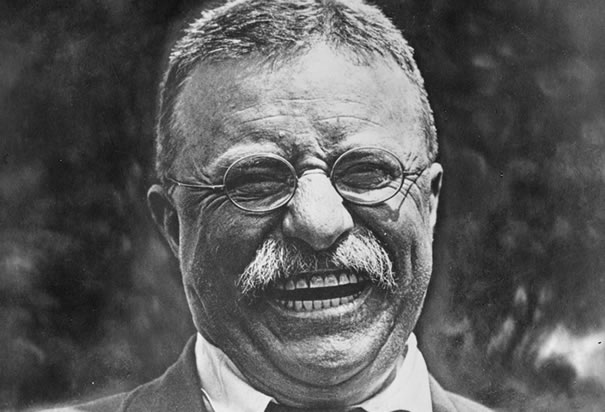

"People don't care how much you know until they know how much you care."
-Theodore Roosevelt

Theodore Roosevelt laughing in 1919.
Theodore Roosevelt laughing in 1919.
- 1858 - Born in New York City, New York, U.S.
- 1882 - Elected to the New York State Assembly and publishes The Naval War of 1812, his first of many books.
- 1898 - Resigns from his post as Assistant Secretary of the Navy to form a Volunteer Cavalry regiment popularly known as the “Rough Riders” and is elected Governor of New York.
- 1901 - Ascends to the Presidency following the assassination of President William McKinley. Works to curb corporate power.
- 1903 - Leads the construction of the Panama Canal.
- 1904 - Reelected to the Presidency and issues the Roosevelt corollary, establishing U.S. preponderance over the Western Hemisphere.
- 1906 - Negotiates the end of the Russo-Japanese War.
- 1908 - Forgoes a third term and supports his former Scretary of War, William Howard Taft, to the Presidency.
- 1909 - Leaves for Africa on the Smithsonian-Roosevelt-African expedition where he travels extensively, hunting, collecting specimens for the Smithsonian, and writing.
- 1912 - After breaking with the Republican party, he loses a Presential election running for the Progressive “Bull Moose” Party. Gets shot by a would-be assassin, but is not critically wounded and goes onto deliver his scheduled 90 minute speech.
- 1913 - Explores the Amazon river under the Roosevelt-Rondon Scientific Expedition.
- 1919 - Dies in Oyster Bay, New York, U.S.